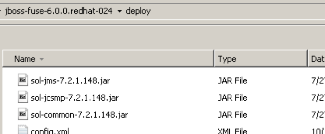

This document demonstrates how to integrate Solace Java Message Service (JMS) with Red Hat JBoss Fuse v6.0 and v6.1 for production and consumption of JMS messages. Red Hat JBoss Fuse supports a variety of different deployment models and dependency injection frameworks. This document describes integration using the OSGi bundle deployment model with the Spring and Blueprint dependency injection frameworks. The goal of this document is to outline best practices for this integration to enable efficient use of both JBoss Fuse and Solace JMS.
The target audience of this document is developers using JBoss Fuse with knowledge of both JBoss Fuse and JMS in general. As such this document focuses on the technical steps required to achieve the integration. For detailed background on either Solace JMS or JBoss Fuse refer to the referenced documents below. This document is divided into the following sections to cover the Solace JMS integration with JBoss Fuse:
- Integrating with JBoss Fuse
- Performance Considerations
- Working with Solace High Availability
Related Documentation
These links contain information related to this guide:
This tutorial requires access to Solace PubSub+ event broker and requires that you know several connectivity properties about your event broker. Specifically you need to know the following:
Resource | Value | Description |
Host | String | This is the address clients use when connecting to the event broker to send and receive messages. (Format: |
Message VPN | String | The event broker Message VPN that this client should connect to. |
Client Username | String | The client username. (See Notes below) |
Client Password | String | The client password. (See Notes below) |
There are several ways you can get access to Solace messaging and find these required properties.
Option 1: Use Solace Cloud
- Follow these instructions to quickly spin up a cloud-based Solace messaging service for your applications.
- The messaging connectivity information is found in the service details in the connectivity tab (shown below). You will need:
- Host:Port (use the JMS URI)
- Message VPN
- Client Username
- Client Password

Option 2: Start a Solace PubSub+ Software Event Broker
- Follow these instructions to start the software event broker in leading Clouds, Container Platforms or Hypervisors. The tutorials outline where to download and how to install the Solace software event broker.
- The messaging connectivity information are the following:
- Host: <public_ip> (IP address assigned to the software event broker in tutorial instructions)
- Message VPN: default
- Client Username: sampleUser (can be any value)
- Client Password: samplePassword (can be any value)
Option 3: Get access to a Solace PubSub+ appliance
- Contact your Solace PubSub+ appliance administrators and obtain the following:
- A Solace Message-VPN where you can produce and consume direct and persistent messages
- The host name or IP address of the appliance hosting your Message-VPN
- A username and password to access the appliance
This integration guide demonstrates how to configure JBoss Fuse to send and receive JMS messages using a shared JMS connection. Accomplishing this requires completion of the following steps:
- Step 1 – Configuration of the Solace Event Broker.
- Step 2 – Configuring JBoss Fuse to connect to the Solace Event Broker.
- Step 3 – Configuring JBoss Fuse to send messages using Solace JMS.
- Step 4 – Configuring JBoss Fuse to receive messages using Solace JMS.
Description of Resources Required
This integration guide will demonstrate creation of Solace resources and configuration of JBoss Fuse managed resources. This section outlines the resources that are created and used in the subsequent sections.
Solace Resources
The following Solace Event Broker resources are required.
Resource | Value | Description |
Solace Event Broker Host | Refer to section 2- Get Solace Messaging for values | |
Message VPN | ||
Client Username | ||
Client Password | ||
Solace Queue | Q/requests | Solace destination of messages produced and consumed |
JNDI Connection Factory | JNDI/CF/fuse | The JNDI Connection factory for controlling Solace JMS connection properties |
JNDI Queue Name | JNDI/Q/requests | The JNDI name of the queue used in the samples |
JBoss Fuse Configuration Resources
Resource | Value |
JndiTemplate | Solace.JndiTemplate |
JndiObjectFactoryBean | Solace.JndiObjectFactoryBean |
JmsComponent | Solace.JmsComponent |
Step 1 – Configuring the Solace Event Broker
The Solace Event Broker needs to be configured with the following configuration objects at a minimum to enable JMS to send and receive messages within JBoss Fuse:
- A Message VPN, or virtual event broker, to scope the integration on the Solace Event Broker.
- Client connectivity configurations like usernames and profiles
- Guaranteed messaging endpoints for receiving messages.
- Appropriate JNDI mappings enabling JMS clients to connect to the Solace Event Broker configuration.
The recommended approach for configuring a event broker is using Solace PubSub+ Manager, Solace's browser-based administration console packaged with the Solace PubSub+ event broker. This document uses CLI as the reference to remain concise - look for related settings if using Solace PubSub+ Manager.
For more details related to event broker CLI see Solace-CLI. Wherever possible, default values will be used to minimize the required configuration. The CLI commands listed also assume that the CLI user has a Global Access Level set to Admin. For details on CLI access levels please see User Authentication and Authorization.
This section outlines how to create a message-VPN called "solace_VPN" on the event broker with authentication disabled and 2GB of message spool quota for Guaranteed Messaging. This message-VPN name is required in the configuration when connecting to the messaging event broker. In practice, appropriate values for authentication, message spool and other message-VPN properties should be chosen depending on the end application's use case.
> home
> enable
# configure
(config)# create message-vpn solace_VPN
(config-msg-vpn)# authentication
(config-msg-vpn-auth)# user-class client
(config-msg-vpn-auth-user-class)# basic auth-type none
(config-msg-vpn-auth-user-class)# exit
(config-msg-vpn-auth)# exit
(config-msg-vpn)# no shutdown
(config-msg-vpn)# exit
(config)#
(config)# message-spool message-vpn solace_VPN
(config-message-spool)# max-spool-usage 2000
(config-message-spool)# exit
(config)#
Configuring Client Usernames & Profiles
This section outlines how to update the default client-profile and how to create a client username for connecting to the Solace Event Broker. For the client-profile, it is important to enable guaranteed messaging for JMS messaging and transacted sessions if using transactions.
The chosen client username of "fuse_user" will be required by JBoss Fuse when connecting to the Solace Event Broker.
(config)# client-profile default message-vpn Solace_Fuse_VPN
(config-client-profile)# message-spool allow-guaranteed-message-receive
(config-client-profile)# message-spool allow-guaranteed-message-send
(config-client-profile)# message-spool allow-transacted-sessions
(config-client-profile)# exit
(config)#
(config)# create client-username fuse_user message-vpn Solace_Fuse_VPN
(config-client-username)# acl-profile default
(config-client-username)# client-profile default
(config-client-username)# no shutdown
(config-client-username)# exit
(config)#
Setting up Guaranteed Messaging Endpoints
This integration guide shows receiving messages within JBoss Fuse from a single JMS Queue. For illustration purposes, this queue is chosen to be an exclusive queue with a message spool quota of 2GB matching quota associated with the message VPN. The queue name chosen is "Q/requests".
(config)# message-spool message-vpn Solace_Fuse_VPN
(config-message-spool)# create queue Q/requests
(config-message-spool-queue)# access-type exclusive
(config-message-spool-queue)# max-spool-usage 2000
(config-message-spool-queue)# permission all delete
(config-message-spool-queue)# no shutdown
(config-message-spool-queue)# exit
(config-message-spool)# exit
(config)#
Setting up Solace JNDI References
To enable the JMS clients to connect and look up the Queue destination required by JBoss Fuse, there are two JNDI objects required on the Solace Event Broker:
- A connection factory: JNDI/CF/fuse
- A queue destination: JNDI/Q/requests
They are configured as follows:
(config)# jndi message-vpn Solace_Fuse_VPN
(config-jndi)# create connection-factory JNDI/CF/fuse
(config-jndi-connection-factory)# property-list messaging-properties
(config-jndi-connection-factory-pl)# property default-delivery-mode persistent
(config-jndi-connection-factory-pl)# exit
(config-jndi-connection-factory)# property-list transport-properties
(config-jndi-connection-factory-pl)# property direct-transport false
(config-jndi-connection-factory-pl)# property "reconnect-retry-wait" "3000"
(config-jndi-connection-factory-pl)# property "reconnect-retries" "20"
(config-jndi-connection-factory-pl)# property "connect-retries-per-host" "5"
(config-jndi-connection-factory-pl)# property "connect-retries" "1"
(config-jndi-connection-factory-pl)# exit
(config-jndi-connection-factory)# exit
(config-jndi)#
(config-jndi)# create queue JNDI/Q/requests
(config-jndi-queue)# property physical-name Q/requests
(config-jndi-queue)# exit
(config-jndi)#
(config-jndi)# no shutdown
(config-jndi)# exit
(config)#
Step 2 – JBoss Fuse – Connecting
For more details refer to the JBoss Fuse document [JBoss Fuse – JMS] and see the section titled "Configuring the Connection Factory", sub-section "Using JNDI". The following is a direct link to the Red Hat documentation related to JNDI setup for the Spring dependency injection framework.
Using the Blueprint dependency injection framework requires modifications to the root element of the XML code from above reference. The JBoss Fuse document [JBoss Fuse – CONTAINER], section "The Blueprint Container", subsection "Blueprint Configuration" describes this. The following is a direct link to the Red Hat documentation related to Blueprint configuration.
Setting up JBoss Fuse requires two steps to be completed. First, the Solace JMS libraries must be deployed in JBoss Fuse. Then either the correct Spring or Blueprint XML configuration file must be deployed. See the following sections for details.
Install the Solace JMS libraries in JBoss Fuse
To install the Solace JMS libraries, copy the required Solace libraries under the JBoss Fuse deploy folder. Following Solace JMS library is required:
sol-jms-.jar
When using Solace JMS version 7.2.1 or earlier, following Solace libraries are additionally required:
sol-common-.jar sol-jcsmp-.jar
The following figure specifies where to deploy 3rd party (Solace) JMS libraries for JBoss Fuse to be able to pick up necessary classes when initiating connection to the Solace JMS provider.

In this case the directory where the Solace JMS libraries should be copied is $FuseHomeDirectory/deploy.
JBoss Fuse Configuration
JBoss Fuse will be configured either through the Spring or the Blueprint dependency injection frameworks. For a comparison and more information about the two frameworks, refer to the JBoss Fuse document [JBoss Fuse – CONTAINER], section "Dependency Injection Frameworks" ", subsection "Spring and Blueprint Frameworks":
Option 1: JBoss Fuse Configuration using Spring configuration file
It is necessary to create and deploy a Spring XML configuration file under the JBoss Fuse deploy folder. The following is a sample Spring configuration showing necessary configuration in order to successfully connect to the Solace Event Broker. The XML configuration file can have any name, e.g.: spring.xml
<?xml version="1.0" encoding="UTF-8"?>
<beans
xmlns="http://www.springframework.org/schema/beans"
xmlns:xsi="http://www.w3.org/2001/XMLSchema-instance"
xmlns:camel="http://camel.apache.org/schema/spring"
xsi:schemaLocation="
http://www.springframework.org/schema/beans http://www.springframework.org/schema/beans/spring-beans.xsd
http://camel.apache.org/schema/spring http://camel.apache.org/schema/spring/camel-spring.xsd">
<bean id="Solace.JndiTemplate"
class="org.springframework.jndi.JndiTemplate">
<property name="environment">
<props>
<prop key="java.naming.provider.url">smf://__IP:PORT__</prop>
<prop key="java.naming.factory.initial">
com.solacesystems.jndi.SolJNDIInitialContextFactory
</prop>
<prop key="java.naming.security.principal">fuse_user@Solace_Fuse_VPN</prop>
</props>
</property>
</bean>
<bean id="Solace.JndiObjectFactoryBean"
class="org.springframework.jndi.JndiObjectFactoryBean">
<property name="jndiTemplate" ref="Solace.JndiTemplate"/>
<property name="jndiName" value="JNDI/CF/fuse"/>
</bean>
<bean id="Solace.JndiDestinationResolver"
class="org.springframework.jms.support.destination.JndiDestinationResolver">
<property name="jndiTemplate" ref="Solace.JndiTemplate" />
<property name="cache" value="true" />
</bean>
<bean id="Solace.JmsComponent" class="org.apache.camel.component.jms.JmsComponent">
<property name="connectionFactory" ref="Solace.JndiObjectFactoryBean"/>
<property name="destinationResolver" ref="Solace.JndiDestinationResolver" />
</bean>
<!-- Configures the Camel Context-->
<camelContext xmlns="http://camel.apache.org/schema/spring">
</camelContext>
</beans>
The following table explains the configuration and its purpose when connecting to the Solace Event Broker.
Bean Id | Description |
Solace.JndiTemplate | This template outlines general connection details for reaching the Solace JNDI hosted on the Solace Event Broker. The Solace JNDI is used to look up parameters for client connections and for destinations. |
Solace.JndiObjectFactoryBean | This references a specific connection factory within the Solace JNDI that will be used when creating new connections. The value for "jndiName" is the connection factory name as configured in the Solace JNDI. In the previous section this was configured as "JNDI/CF/fuse" |
Solace.JndiDestinationResolver | The JndiDestinationResolver allows destinations to be resolved dynamically using JNDI. Because a JNDI lookup is an expensive request, the JndiDestinationResolver also allows for caching of destinations through the setCache() method. When using this destination resolver with Solace JMS, it is very important to enable destination caching for Solace JMS to work effectively. By default this is enabled in the Spring Framework. |
Solace.JmsComponent | The cached connection factory allows for re-use of the Solace connection when sending messages. For efficient integration within the Spring Framework, it is essential that connection caching be enabled and configured correctly. There are more details on this in Section 4 Performance Considerations including discussion of the sessionCacheSize attribute. It is this connection factory that is used by the producer and consumer clients when connecting. |
camelContext | This will be used in subsequent sections to send and receive messages. |
Option 2: JBoss Fuse Configuration using Blueprint configuration file
Similarly to Option 1, it is necessary to create and deploy a Blueprint XML configuration file under the JBoss Fuse deploy folder. The following is a sample Blueprint configuration showing necessary configuration in order to successfully connect to the Solace Event Broker. The XML configuration file can have any name, e.g.: blueprint.xml
<?xml version="1.0" encoding="UTF-8"?>
<blueprint xmlns="http://www.osgi.org/xmlns/blueprint/v1.0.0"
xmlns:xsi="http://www.w3.org/2001/XMLSchema-instance">
<bean id="Solace.JndiTemplate"
class="org.springframework.jndi.JndiTemplate">
<property name="environment">
<props>
<prop key="java.naming.provider.url">smf://__IP:PORT__</prop>
<prop key="java.naming.factory.initial">
com.solacesystems.jndi.SolJNDIInitialContextFactory
</prop>
<prop key="java.naming.security.principal">fuse_user@Solace_Fuse_VPN</prop>
</props>
</property>
</bean>
<bean id="Solace.JndiObjectFactoryBean"
class="org.springframework.jndi.JndiObjectFactoryBean" init-method="afterPropertiesSet">
<property name="jndiTemplate" ref="Solace.JndiTemplate"/>
<property name="jndiName" value="JNDI/CF/fuse"/>
</bean>
<bean id="Solace.JndiObjectFactoryBeanRef" factory-ref="Solace.JndiObjectFactoryBean" factory-method="getObject" />
<bean id="Solace.JndiDestinationResolver"
class="org.springframework.jms.support.destination.JndiDestinationResolver">
<property name="jndiTemplate" ref="Solace.JndiTemplate" />
<property name="cache" value="true" />
</bean>
<bean id="Solace.JmsComponent" class="org.apache.camel.component.jms.JmsComponent">
<property name="connectionFactory" ref="Solace.JndiObjectFactoryBeanRef"/>
<property name="destinationResolver" ref="Solace.JndiDestinationResolver" />
</bean>
<!-- Configures the Camel Context-->
<camelContext xmlns="http://camel.apache.org/schema/blueprint">
</camelContext>
</blueprint>
The configuration and its purpose are the same as explained in the above table. The differences in the structure are specific to Blueprint.
Step 3 – JBoss Fuse – Sending Messages to Solace
To send messages to Solace, a camel route must be defined. The following modifications to the configuration file created above in Step 2 show an example of simple message sending.
To the previous XML configuration, add a route element with "to" child which specifies the Solace JMS JNDI name of the destination used for sending.
<camelContext xmlns="http://camel.apache.org/schema/spring">
<route id="pubtosolace">
<from uri="timer:simple?period=5000"/>
<setBody>
<simple>Solace Camel JMS Test</simple>
</setBody>
<to uri="Solace.JmsComponent:queue:JNDI/Q/requests"/>
</route>
</camelContext>
With the above configuration in place JBoss Fuse when started will publish text messages every 5 seconds to Solace queue associated with a JNDI name "JNDI/Q/requests". The content of the messages will be "Solace Camel JMS Test".
Step 4 – JBoss Fuse – Receiving Messages from Solace
To receive messages from Solace, a camel route must be defined. The following modifications to the XML configuration file created above in Step 2 show an example of simple messages receiving.
To the previous configuration, add a route element with "from" child which specifies the Solace JMS JNDI name of the queue destination acting as source for the messages.
<camelContext xmlns="http://camel.apache.org/schema/spring">
<route id="recvFromSolace">
<from uri="Solace.JmsComponent:queue:JNDI/Q/requests"/>
<to uri="log:SOLACE"/>
</route>
</camelContext>
With the above configuration in place JBoss Fuse when started will subscribe to Solace queue associated with a JNDI name "JNDI/Q/requests". Every message it consumes will be logged to the JBoss Fuse log file with a "SOLACE" tag.
Known JBoss Fuse 6.1 issue and workaround
When using JBoss Fuse v6.1, the "felix.threading" configuration in $FuseHomeDirectory/etc/config.properties must be modified as described in:
Caching JMS Connections
In JBoss Fuse, the connection object caching is controlled by the CachingConnectionFactory. A CachingConnectionFactory contains a single JMS Connection which is reused across all JmsTemplates. In order to enable session caching within the JMS Connection, the sessionCacheSize parameter must be set to specify the number of JMS Session objects to cache for reuse.
One behavior worth noting is that as outlined in the JBoss Fuse Spring documentation, if the pool of cached sessions is fully utilized and a further request for a cached Session is made, then the requested Session will be created and disposed on demand. If you couple this behavior with the fact that the default value is 1 for sessionCacheSize it is important to configure this to a value that is applicable to the end application to avoid the undesirable behaviour of create and dispose on each call to send a message during periods of high demand. This value should be set to the maximum concurrency required by the application.
The following configuration sample illustrates how to set the CachingConnectionFactory cache sizes.
<bean id="Solace.CachedConnectionFactory" class="org.springframework.jms.connection.CachingConnectionFactory">
<property name="targetConnectionFactory" ref="Solace.JndiObjectFactoryBean" />
<property name="sessionCacheSize" value="10" />
</bean>
The XML code listings in the Appendix show how to integrate SolaceCachedConnectionFactory into the appropriate configuration files.
Concurrent Consumers
One can specify number of concurrent threads processing exchanges to consume messages from a non-exclusive queue in a round robin fashion. This helps consume messages from a specified queue faster. Set the JMS query option, concurrentConsumers, to create a thread pool of competing consumers. For example, the following route creates a pool of three competing threads that pick messages from the specified queue:
<route id="pubtosolace1">
<from uri="Solace.JmsComponent:queue:JNDI/Q/requests?concurrentConsumers=5"/>
<to uri="Solace.JmsComponent:queue:JNDI/Q/response"/>
</route>
Ideally, the value of the property "sessionCacheSize" should be kept equal to the number of concurrent consumers to get the best performance.
The [Solace-JMS-REF] section "Establishing Connection and Creating Sessions" provides details on how to enable the Solace JMS connection to automatically reconnect to the standby event broker in the case of a HA failover of a Solace Event Broker. By default Solace JMS connections will reconnect to the standby event broker in the case of an HA failover.
In general the Solace documentation contains the following note regarding reconnection:
Note: When using HA redundant event brokers, a fail-over from one event broker to its mate will typically
occur in under 30 seconds, however, applications should attempt to reconnect for at least five minutes.
In Setting up Solace JNDI References, the Solace CLI commands correctly configured the required JNDI properties to reasonable values. These commands are repeated here for completeness.
(config)# jndi message-vpn Solace_Fuse_VPN
(config-jndi)# create connection-factory JNDI/CF/fuse
(config-jndi-connection-factory)# property-list transport-properties
(config-jndi-connection-factory-pl)# property "reconnect-retry-wait" "3000"
(config-jndi-connection-factory-pl)# property "reconnect-retries" "20"
(config-jndi-connection-factory-pl)# property "connect-retries-per-host" "5"
(config-jndi-connection-factory-pl)# property "connect-retries" "1"
(config-jndi-connection-factory-pl)# exit
(config-jndi-connection-factory)# exit
(config-jndi)# exit
(config)#
The key component for debugging integration issues with the Solace JMS API is the API logging that can be enabled. How to enable logging in the Solace API is described below.
How to enable Solace JMS API logging
The [JBoss Fuse – CONF], section "Logging" has details on configuring logging for JBoss Fuse. Since the Solace JMS API also makes use of the Jakarta Commons Logging API (JCL), configuring the Solace JMS API logging is very similar to configuring any other JBoss Fuse logging.
JBoss Fuse default logging level for all packages is INFO. The default logging level for Solace JMS API can be configured by editing $FuseHomeDirectory/etc/org.ops4j.pax.logging.cfg and adding following lines.
One note to consider is that since the Solace JMS API has a dependency on the Solace Java API (JCSMP) both of the following logging components should be enabled and tuned when debugging to get full information. For example to set both to debug level:
log4j.category.com.solacesystems.jms=DEBUG
log4j.category.com.solacesystems.jcsmp=DEBUG
The JBoss Fuse console can also be used to dynamically change the logging level for the Solace JMS API packages:
JBossFuse:karaf@root> log:set DEBUG com.solacesystems.jms
JBossFuse:karaf@root> log:set DEBUG com.solacesystems.jcsmp
JBoss Fuse writes all logs into the $FuseHomeDirectory/data/log/fuse.log common log file by default. As outlined in the [JBoss Fuse – CONF], it is possible to reconfigure JBoss Fuse logging so that it writes one log file for each bundle.
FuseESB:karaf@root> config:edit org.ops4j.pax.logging
FuseESB:karaf@root> config:propset log4j.rootLogger "INFO, out, sift, osgi:VmLogAppender"
FuseESB:karaf@root> config:update
Authentication
JMS Client authentication is handled by the Solace Event Broker. The Solace Event Broker supports a variety of authentications schemes as described in [Solace-FG] in the Section "Client Authentication and Authorization". The required JMS authentication properties can be set in the JndiTemplate configuration depending on which authentication scheme is being used. The following example shows how to enable basic authentication using a username of "fuse_user" and password of "fuse_password".
<bean id="Solace.JndiTemplate" class="org.springframework.jndi.JndiTemplate">
<property name="environment">
<props>
<prop key="java.naming.provider.url" value="smf://___IP:PORT___" />
<prop key="java.naming.factory.initial"
value="com.solacesystems.jndi.SolJNDIInitialContextFactory" />
<prop key="java.naming.security.principal"
value="fuse_user@Solace_Fuse_VPN" />
<prop key="java.naming.security.credentials"
value="fuse_password" />
</props>
</property>
</bean>
Using SSL Communication
This section outlines how to update the Solace Event Broker and JBoss Fuse configuration to switch the client connection to using secure connections with the Solace Event Broker. For the purposes of illustration, this section uses a server certificate on the Solace Event Broker and basic client authentication. It is possible to configure Solace JMS to use client certificates instead of basic authentication. This is done using configuration steps that are very similar to those outlined in this document. The [Solace-FP] and [Solace-JMS-REF] outline the extra configuration items required to switch from basic authentication to client certificates.
To change a JBoss Fuse application from using a plain text connection to a secure connection you must do two things:
- The Solace Event Broker configuration must be updated
- The Solace JMS configuration within JBoss Fuse.
Configuring the Solace Event Broker
To enable secure connections to the Solace Event Broker, the following configuration must be updated on the Solace Event Broker:
- Server Certificate
- TLS/SSL Service Listen Port
- Enable TLS/SSL over SMF in the Message VPN
The following sections outline how to configure these items.
Configure the Server Certificate
Before, starting, here is some background detail on the server certificate required by the Solace Event Broker. This is from the [Solace-FP] section "Setting a Server Certificate"
To enable the exchange of information through TLS/SSL-encrypted SMF service, you must set the TLS/SSL server
certificate file that the Solace Event Broker is to use. This server certificate is presented to a client during
the TLS/SSL handshakes. A server certificate used by a event broker must be an x509v3 certificate and
it must include a private key. The server certificate and key use an RSA algorithm for private key generation,
encryption and decryption, and they both must be encoded with a Privacy Enhanced Mail (PEM) format.
The single server certificate file set for the event broker can have a maximum chain depth of three (that is,
the single certificate file can contain up to three certificates in a chain that can be used for the certificate
verification).
To configure the server certificate, first copy the server certificate to the Solace Event Broker. For the purposes of this example, assume the server certificate file is named "mycert.pem".
# copy sftp://[<username>@]<ip-addr>/<remote-pathname>/mycert.pem /certs
<username>@<ip-addr>'s password:
#
Then set the server certificate for the Solace Event Broker.
(config)# ssl server-certificate mycert.pem
Configure TLS/SSL Service Listen Port
By default, the Solace Event Broker accepts secure messaging client connections on port 55443. If this port is acceptable then no further configuration is required and this section can be skipped. If a non-default port is desired, then follow the steps below. Note this configuration change will disrupt service to all clients of the Solace Event Broker and should therefore be performed during a maintenance window when this client disconnection is acceptable. This example assumes that the new port should be 55403.
(config)# service smf
(config-service-smf)# shutdown
All SMF and WEB clients will be disconnected.
Do you want to continue (y/n)? y
(config-service-smf)# listen-port 55403 ssl
(config-service-smf)# no shutdown
(config-service-smf)# exit
(config)#
Enable TLS/SSL within the Message VPN
By default within Solace message VPNs both the plain-text and SSL services are enabled. If the Message VPN defaults remain unchanged, then this section can be skipped. However, if within the current application VPN, this service has been disabled, then for secure communication to succeed it should be enabled. The steps below show how to enable SSL within the SMF service to allow secure client connections from the JBoss Fuse.
(config)# message-vpn Solace_Spring_VPN
(config-msg-vpn)# service smf
(config-msg-vpn-service-smf)# ssl
(config-msg-vpn-service-ssl)# no shutdown
(config-msg-vpn-service-ssl)# exit
(config-msg-vpn-service-smf)# exit
(config-msg-vpn-service)# exit
(config-msg-vpn)# exit
(config)#
JBoss Fuse Configuration
The JBoss Fuse configuration requires updating the Solace.JndiTemplate bean in the configuration file in two ways:
- Updating the provider URL to specify the protocol as secure (smfs)
- Adding the required parameters for the secure connection
Updating the provider URL
In order to signal to the Solace JMS API that the connection should be a secure connection, the protocol must be updated in the URI scheme. The Solace JMS API has a URI format as follows:
<URI Scheme>://[username]:[password]@<IP address>[:port]
Recall from above, originally, the "java.naming.provider.url" was as follows:
<prop key="java.naming.provider.url" value="smf://___IP:PORT___" />
This specified a URI scheme of "smf" which is the plaint-text method of communicating with the Solace Event Broker. This should be updated to "smfs" to switch to secure communication giving you the following configuration:
<prop key="java.naming.provider.url" value="smfs://___IP:PORT___" />
Adding SSL Related Configuration
Additionally, the Solace JMS API must be able to validate the server certificate of the Solace Event Broker in order to establish a secure connection. To do this, the following trust store parameters need to be provided.
First the Solace JMS API must be given a location of a trust store file so that it can verify the credentials of the Solace Event Broker server certificate during connection establishment. This parameter takes a URL or Path to the trust store file.
<prop key="Solace_JMS_SSL_TrustStore" value="___Path_or_URL___" />
It is also required to provide a trust store password. This password allows the Solace JMS API to validate the integrity of the contents of the trust store. This is done through the following parameter.
<prop key="Solace_JMS_SSL_TrustStorePassword" value="___Password___" />
There are multiple formats for the trust store file. By default Solace JMS assumes a format of Java Key Store (JKS). So if the trust store file follows the JKS format then this parameter may be omitted. Solace JMS supports two formats for the trust store: "jks" for Java Key Store or "pkcs12". Setting the trust store format is done through the following parameter.
<prop key="Solace_JMS_SSL_TrustStoreFormat" value="jks" />
And finally, the authentication scheme must be selected. Solace JMS supports the following authentication schemes for secure connections:
- AUTHENTICATION_SCHEME_BASIC
- AUTHENTICATION_SCHEME_CLIENT_CERTIFICATE
This integration example will use basic authentication. So the required parameter is as follows:
<prop key="Solace_JMS_Authentication_Scheme" value="AUTHENTICATION_SCHEME_BASIC" />
Example JBoss Fuse Configuration Bean
The following example bean outlines all of the required JBoss Fuse configuration changes to the Solace.JndiTemplate where the user should substitute appropriate values for:
- IP:PORT
- Path_or_URL
- Password
<bean id="Solace.JndiTemplate" class="org.springframework.jndi.JndiTemplate">
<property name="environment">
<props>
<prop key="java.naming.provider.url" value="smfs://___IP:PORT___"/>
<prop key="java.naming.factory.initial"
value="com.solacesystems.jndi.SolJNDIInitialContextFactory"/>
<prop key="java.naming.security.principal" value="fuse_user@Solace_Fuse_VPN"/>
<!-- SSL Related Configuration -->
<prop key="Solace_JMS_Authentication_Scheme"
value="AUTHENTICATION_SCHEME_BASIC"/>
<prop key="Solace_JMS_SSL_TrustStore" value="___Path_or_URL___"/>
<prop key="Solace_JMS_SSL_TrustStoreFormat" value="jks" />
<prop key="Solace_JMS_SSL_TrustStorePassword" value="___Password___"/>
</props>
</property>
</bean>
Working with the Solace Disaster Recovery Solution
The [Solace-FG] section "Data Center Replication" contains a sub-section on "Application Implementation" which details items that need to be considered when working with Solace's Data Center Replication feature. This integration guide will show how the following items required to have a JBoss Fuse application successfully connect to a backup data center using the Solace Data Center Replication feature:
- Configuring a Host List in the JBoss Fuse configuration file
- Configuring JMS Reconnection Properties within Solace JNDI
- Disaster Recovery Behavior Notes
Configuring a Host List in the JBoss Fuse configuration file
As described in [Solace-FG], the host list provides the address of the backup data center. This is configured in the JBoss Fuse configuration file through the java.naming.provider.url which is set within the solace.JndiTemplate bean in the sample configuration as follows:
<bean id="solaceJndiTemplate" class="org.springframework.jndi.JndiTemplate"
lazy-init="default" autowire="default">
<property name="environment">
<props>
<prop key="java.naming.provider.url"
value="smf://__IP_active_site:PORT__,smf://__IP_standby_site:PORT__" />
<!-- ... Snip remaining configuration ... -->
</props>
</property>
</bean>
For the java.naming.provider.url both the active site IP address and standby site IP address are provided. When connecting, the Solace JMS connection will first try the active site and if it is unable to successfully connect to the active site, then it will try the standby site. This is discussed in much more detail in the referenced Solace documentation.
Configuring reasonable JMS Reconnection Properties within Solace JNDI
In order to enable applications to successfully reconnect to the standby site in the event of a data center failure, it is required that the Solace JMS connection be configured to attempt connection reconnection for a sufficiently long time to enable the manual switch-over to occur. This time is application specific depending on individual disaster recovery procedures and can range from minutes to hours depending on the application. In general it is best to tune the reconnection by changing the "reconnect retries" parameter within the Solace JNDI to a value large enough to cover the maximum time to detect and execute a disaster recovery switch over. If this time is unknown, it is also possible to use a value of "-1" to force the Solace JMS API to reconnect indefinitely.
The reconnect retries is tuned in the Solace Event Broker CLI as follows:
config)# jndi message-vpn Solace_Spring_VPN
(config-jndi)# connection-factory JNDI/CF/spring
(config-jndi-connection-factory)# property-list transport-properties
(config-jndi-connection-factory-pl)# property "reconnect-retries" "-1"
(config-jndi-connection-factory-pl)# exit
(config-jndi-connection-factory)# exit
(config-jndi)# exit
(config)#
There are two associated files you can use for reference: